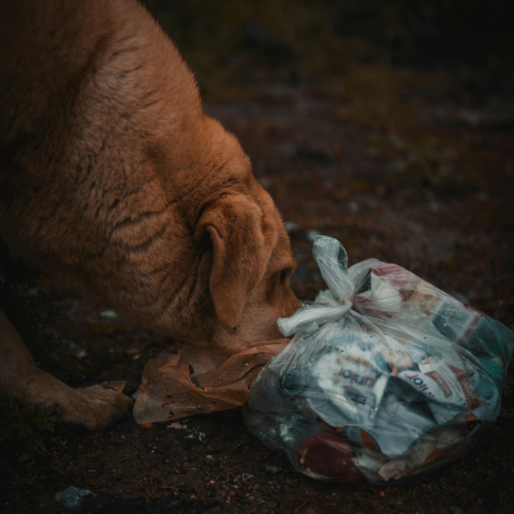

Más que un dispensador, una misión: recicla, alimenta, adopta
Transforma residuos en segundas oportunidades: Alimenta con cociencia, adopta con corazón
Problemáticas

Los plásticos, especialmente los de un solo uso, son
una de las principales fuentes de contaminación en el planeta. Grandes cantidades
de plástico terminan en los océanos, ríos y otros ecosistemas, dañando la vida
silvestre y afectando la salud de los seres humanos.
Los microplásticos se han encontrado en el agua potable, alimentos y aire, lo que plantea riesgos potenciales para nuestra salud.
Los microplásticos se han encontrado en el agua potable, alimentos y aire, lo que plantea riesgos potenciales para nuestra salud.
El abandono de mascotas y la falta de control sobre la reproducción de perros
sin hogar contribuyen al aumento de la población de perros callejeros.
La concentración de perros en los comederos puede facilitar la propagación de
enfermedades y parásitos. Esto puede afectar tanto a los perros como a otros animales y, en algunos casos, a humanos.
Propuesta
Se propone la creación de dispensadores de comida o agua hechos con materiales a base de PET con materiales reciclados y donarlos a albergues, fundaciones, etc., o usarlo para las mascotas de nuestro hogar, ya que es una forma de generar conciencia para el apoyo de refugios y la adopción, además de fomentar el reciclaje y darle una segunda vida a los plásticos.